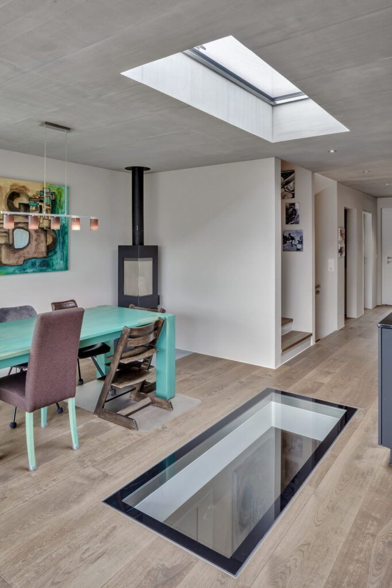

Švýcarský vývoj, český servis.
GLASSFLOOR navrhuje a vyrábí švýcarská Heliobus AG ve St. Gallen. V České republice systém zastupuje WT - WINDOWS TOMORROW s.r.o., která se dennímu světlu v interiéru věnuje od roku 1997.
Heliobus AG a WT: rozdělení rolí
Kdo co dělá.
Heliobus AG, St. Gallen: vývoj, konstrukce, kompletace a kontrola každého kusu. Sem se posílá technický návrh a odsud přijíždí hotový, slícovaný prvek.
WT - WINDOWS TOMORROW s.r.o.: zastoupení pro Českou republiku. Technické posouzení projektu, návrh provedení, komunikace s výrobou a podpora na stavbě.
Portfolio držíme záměrně úzké. Radši méně produktů v opravdu vysokém standardu než katalog desítek podobných řešení.
Trio, které se navzájem doplňuje.
Vývoj ve Švýcarsku, denní světlo jako obor a projekty v České republice. Za každým kusem stojí konkrétní lidé, ne oddělení.
Rudolf Signer
- Dipl. BauingenieurUniverzita aplikovaných věd St. Gallen
- Dipl. Energie Ing.Univerzita aplikovaných věd Severozápadní Švýcarsko, Basilej
- Bauphysik & ÖkologieUniverzita aplikovaných věd v Curychu ZHAW
Dr. sc. techn. Miroslav Fabian
- PhD TageslichtKjótská univerzita, Japonsko · Slovenská technická univerzita, Bratislava · Slovenská akademie věd, ICA SAS
- Dipl. BauingenieurSlovenská technická univerzita, Bratislava
- Normy a členstvíÚčast na normě EU EN 17 037 Denní světlo v budovách · člen JTC 15 (revize ISO 8995-1) · člen TC 3-54 (revize CIE 16) · odborný člen Společnosti pro sluneční energii
Radomír Kučera
- VzděláníStřední průmyslová škola stavební Josefa Gočára
- ZaměřeníOdborník na denní osvětlování budov, autor odborných publikací a článků
- SpolupráceExterní spolupráce s ČVUT v Praze
Systém vzniká ve výrobě Heliobus AG ve švýcarském St. Gallen. Projekty v České republice vede WT - WINDOWS TOMORROW s.r.o.
GLASSFLOOR vzniká ve St. Gallen.
Vývoj, konstrukce, kompletace a kontrola každého zakázkového kusu probíhají ve výrobě Heliobus AG.
Ozvěte se nám.
Kontakty na tým i na formulář najdete na stránce Kontakty.
Zobrazit kontakty